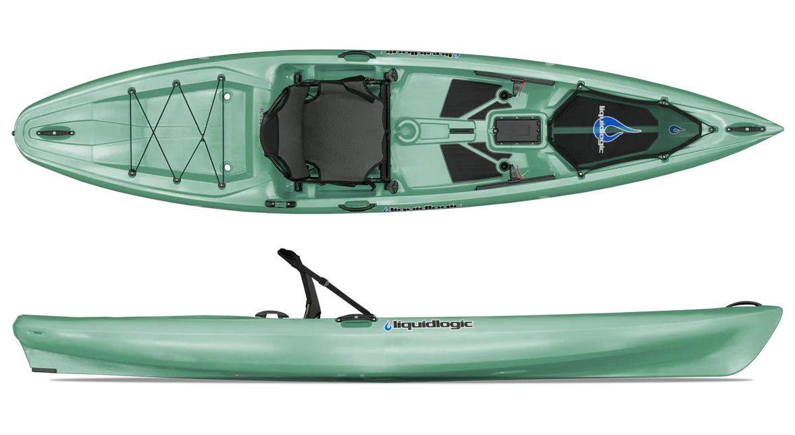
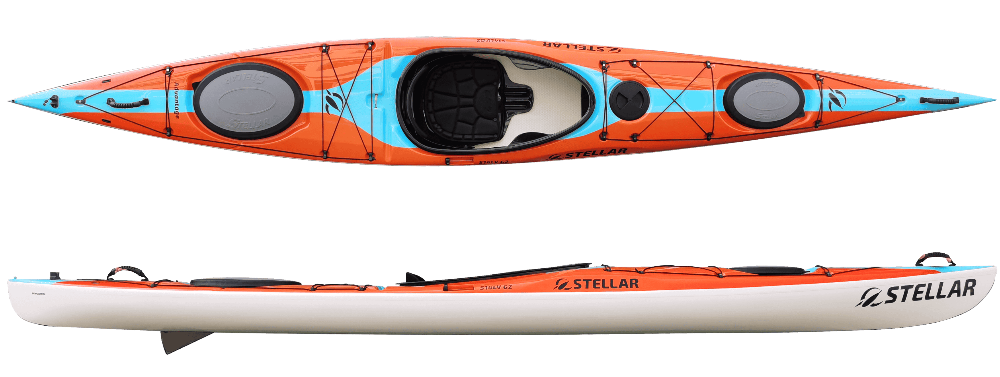
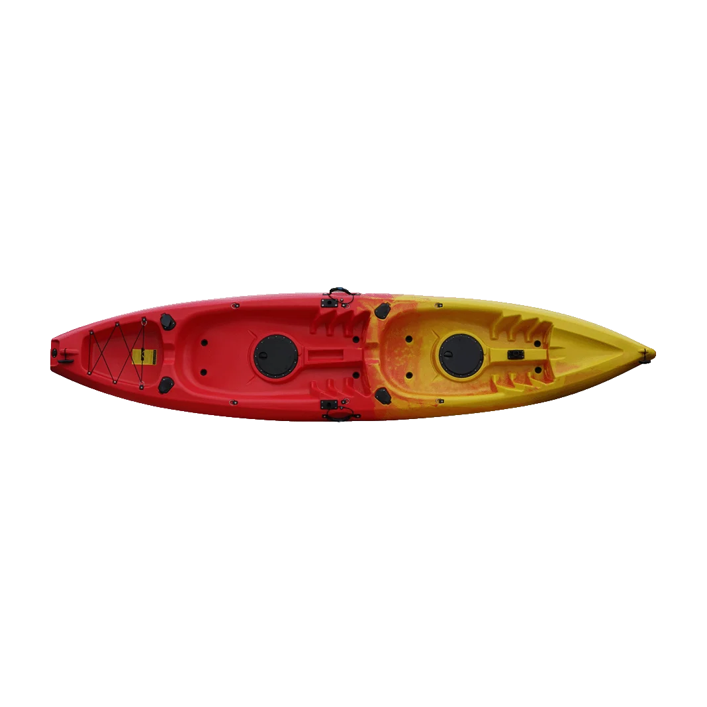
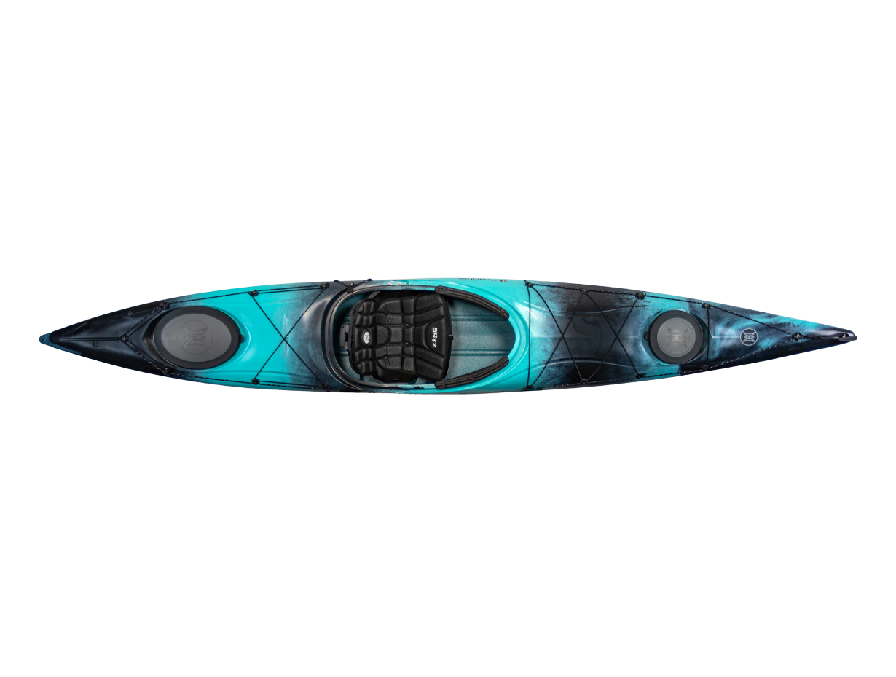

Welcome to Kayaking!
Select a topic above to get started: types of kayaks, basic paddle strokes, or rescue techniques.
Types of Kayaks
Sit-on-top Kayaks
Sit-on-top kayaks feature an open, un-enclosed deck that makes them incredibly stable.

- Can't sink: The hull is sealed and full of foam or air, so even if it flips, it stays afloat and is easy to climb back onto.
- Self-draining: Some sit-on-top kayaks have scupper holes that let water that splashes in drain right back out.
- Easier entry/exit: You can hop on and off, jump in the water to swim, and get back on without much hassle.
- Easy to learn: Due to it's unsinkable nature, it's better for beginners to try for their first time kayaking.
Overall, it offers stability, freedom and comfort with a low skill floor.
It's great for: Casual kayaking, beginners, and even snorkeling.
Sit-in Kayaks
Sit-in kayaks features an enclosed cockpit where your legs and lower body are placed inside the hull.

- Lower center of gravity: often feels more stable and can handle rougher water/waves better in the hands of an experienced paddler.
- Paddling Efficiency: Having narrower, sleeker hulls, they glide faster and require less effort to paddle long distances.
- Excellent Control: Your legs connect directly with the inside of the hull, allowing for better leverage, edging, and overall control.
- Harder to learn: If a sit-in kayak capsizes, it fills with water, requiring specialized techniques to empty and re-enter.
- Enclosed cockpit: Getting in and out requires a bit more flexibility and practice compared to sitting on top of an open deck.
Overall, it offers more control and speed at the cost of a steeper learning curve.
It's great for: Experienced kayakers, more control and speed.
Click here to learn more about the difference between Sit-on-top and Sit-in kayaks!Basic Paddle Strokes
Forward Stroke
your main stroke, used to move forward.

- Immerse your blade fully on one side of the boat next to your feet.
- Pull backwards.
- When your hand reaches just behind your hip, "slice" the blade out of the water. (To repeat, you simply immerse the out-of-water blade next to your feet.)
Reverse Stroke
can be used to brake or reverse, just the reverse of the forward stroke.

- Immerse your blade fully on the side of the boat next to your hip.
- Push forwards.
- When your paddle blade is even with your feet, "slice" the blade out of the water. (To repeat, simply immerse the out-of-water blade on the opposite side of the boat next to your hip.)
Sweep Stroke
can be used to rotate your kayak

- Extend your arms forward and immerse the blade near your feet to begin your sweep. Begin on the opposite side of the boat from the direction you want to turn
- Sweep the blade in a wide arc toward the stern of the boat. Put some power into your body's rotation to optimize the stroke, especially after the paddle has passed the cockpit.
- When the blade approaches the hull behind your cockpit, finish the stroke by slicing the blade out of the water. (Usually only one sweep stroke is needed to rotate 180 degrees but you can repeat the sweep stroke if needed.)
Draw Stroke
can be used to move your boat sideways. useful if you need to pull close to a dock or another boat.

- Rotate your paddle blade so it's horizontal.
- Reach out with the tip of the blade to touch the water about two feet away, directly on the side of your boat.
- Use your lower hand to pull the blade straight toward you, keeping the tip of the blade immersed in the water during the stroke.
- Stop before the blade hits the side of the boat. (Typically, several draw strokes are needed, so you can repeat the stroke: Rotate the blade 90 degrees, then slice it out of the water sideways. Repeat steps above)
Rescue
Rescue is important to know as when you or your buddy capsizes, its the only way to get back onto the kayak.
T-Rescue
A T-rescue is a buddy rescue for a capsized kayak. The rescuer’s kayak and the overturned kayak form a T shape.

- The capsized person exits the kayak if they’re still inside and stays holding onto their kayak and paddle.
- The rescuer paddles to the bow/front of the overturned kayak, forming a T.
- The swimmer pops up while also pushing down hard on the back of the overturned boat.
- The rescuer simultaneously lifts and slides the bow of the capsized boat.
- The rescuer sets that bow down on top of their boat, immediately in front of them.
- The duo slides the overturned boat so the cockpit is near the hull of the other boat, then rocks the overturned boat back and forth to empty water from the cockpit.
- Orient the kayaks, place them parallel and close together. The rescuer holds both boats firmly.
- The swimmer climbs onto the rear deck, slides their legs back into the cockpit, and rotates into a seated position.
Minigame
Difficulty:Reach the other side of the river before the other kayak! (you're the bottom one)

